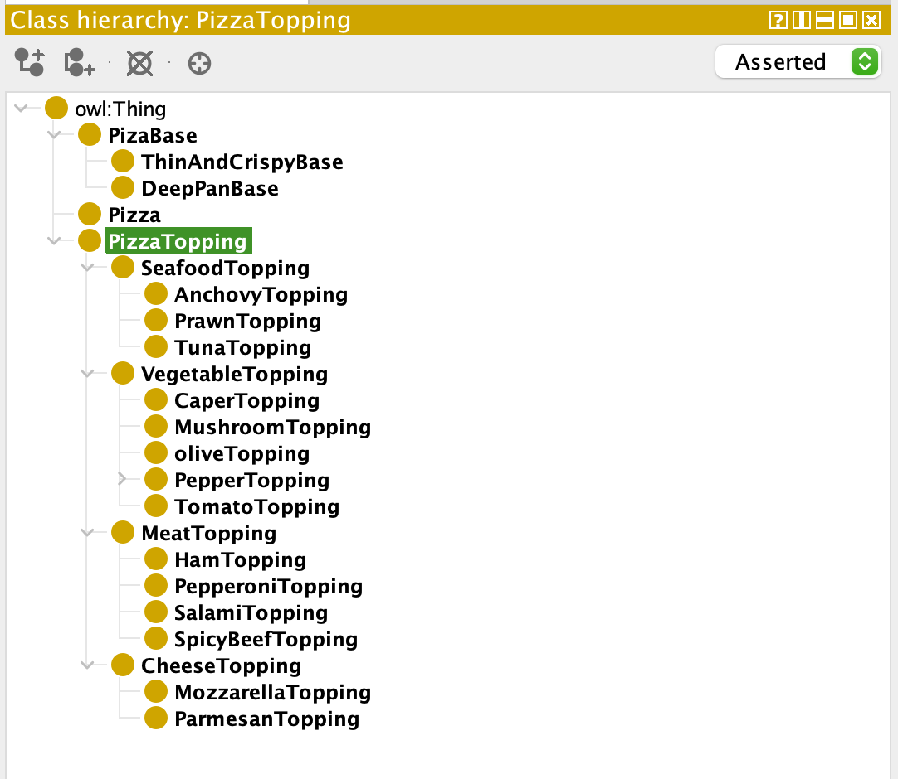
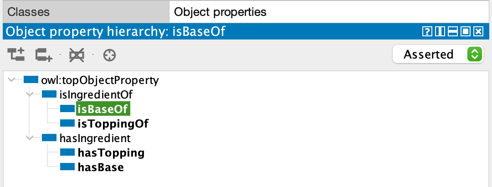
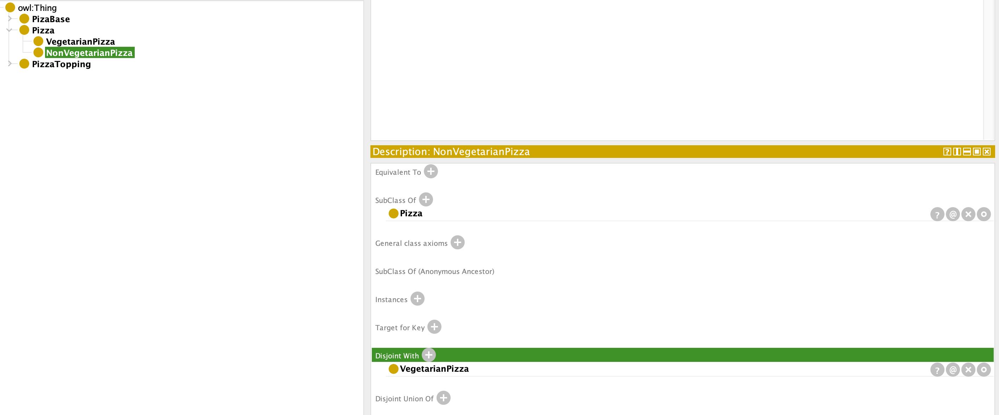

Intelligent Agents
Formative and e-Portfolio Activities
Unit1
Formative Activities
Activity 1
‘knowing’
a. A second language in which you are fluent.
c. A close friend.
g. The weather where you are now.
‘having information’
b. The content of a television news programme.
d. A company’s annual report.
e. Your close friend’s partner whom you have yet to meet.
f. The weather on the other side of the world.
Activity 2
The main distinguishing feature is whether or not you know the information without trying to get it yourself. 'Knowing' is information that you already know, and you don’t get your information from outside sources. On the other hand, ‘having information’ is information that you get information from outside sources. If there are not outside sources, you don’t know.
Unit3
Formative Activities
Activity 1
・Chapter 2 Question 4 - The barber's paradox
The paradox can be expressed in first-order logic as follos:
1. (1) ∀x (Shaves(x) ≡ ¬ShavesSelf(x))
2. (2) ∀x (Shaves(Barber) → ¬ShavesSelf(x))
Analyze the paradox:
①states that a person who does not shave himself must have his barber shave him, and ②states that a person who has his barber shave him must not also shave himself.
To show that no barber satisfies these conditions, we can derive a contradiction by assuming that there is a barber who satisfies the conditions.
Assumption :
∃x (Barber = x ∧ ∀y (Shaves(x) → ¬ShavesSelf(y)))
From ① and ②, we can derive the following:
③ ShavesSelf(Barber) → ¬Shaves(Barber)
From the assumption and ③, we can derive the following:
④ ¬Shaves(Barber)
From ① and ④, we can derive the following:
⑤ShavesSelf(Barber)
④ and ⑤ are a contradiction, therefore our assumption must have been false. This means that there cannot be a barber who fulfills the requirements of the barber's paradox.
Therefore, no barber can fulfill the requirements of the barber’s paradox.
・Chapter 3 Question 4 - A Canadian variant of an old puzzle.
(a) Here are FOL sentences for each of the given statements:
One of Henri or Pierre is a truth teller, and one is not.
∀x (Truth-teller(x) ∨ ¬Truth-teller(x))
∃x (Truth-teller(x) ∧ ∃y (y ≠ x ∧ ¬Truth-teller(y)))
An inhabitant will answer yes to a question if and only if he is a truth teller and the correct answer is yes, or he is not a truth teller and the correct answer is not yes.
∀x, q (Answer-yes(x, q) ≡ (Truth-teller(x) ∧ True(q)) ∨ ¬Truth-teller(x) ∧ ¬True(q)))
The gauche question is correctly answered yes if and only if the proper direction to go is left.
True(gauche) ≡ Go-left
A dit-oui(x, q) question is correctly answered yes if and only if x will answer yes to question q.
True(dit-oui(x, q)) ≡ Answer-yes(x, q)
A dit-non(x, q) question is correctly answered yes if and only if x will not answer yes to q.
True(dit-non(x, q)) ≡ ¬Answer-yes(x, q)
Activity 2
Define the functions left and right
left(F)
left(W)
left(G)
left(C)
right(F)
right(W)
right(G)
right(C)
Define the predicates on and across
on(F, left)
on(W, left)
on(G, left)
on(C, left)
across(F, right)
across(W, right)
across(G, right)
across(C, right)
action 1
across(F, right) ∧ on(W, left) ∧ on(G, left) ∧ on(C, left)
action 2
across(F, right) ∧ across(W, right) ∧ across(G, right) ∧ on(C, left)
action 3
across(F, right) ∧ across(W, right) ∧ across(G, right) ∧ across(C, right)
Unit5
Activity 1
What are the 3 knowledge bases identified by the authors?
1, Linguistic Knowledge Base
2, Expert Knowledge Base
3, Cognitive Knowledge Base
What are the differences between them?
Linguistic Knowledge Base
It is lexical databases such as FrameNet, WordNet and ConceptNet.
Expert Knowledge Base
It consists of useful domain knowledge for problem solving. This knowledge is represented as a set of rules.
Cognitive Knowledge Base
It is a structure that manipulates knowledge as a dynamic concept network like the human knowledge processing.
Activity 2
How does the author define a ‘Knowledge-based economy’?
The author describes a ‘Knowledge-based economy as an economy driven by knowledge and technology diffusion, a greater skill level, and a creative and innovative environment.
What is the triple helix model?
It is a model of university-industry-government relations. This model aids in studying the knowledge base of an economy in terms of a trade-off between locally stabilised trajectories versus techno-economic regimes at a global level.
Activity 3
What are the components of the Onto Knowledge model/ framework?
The Onto Knowledge model/framework seems to be centered around ontology-based knowledge management. It comprises a semantic toolset for information processing and user access, an ontology-based inference layer called OIL on top of the World Wide Web, and a methodology known as On-To-Knowledge Methodology (OTKM) for introducing and maintaining ontology-based knowledge management applications in enterprises.
What are the example use cases given for the framework?
There are 3 use cases
Swiss Life : organizational memory
BT : call centres
EnterSearch : virtual enterprise
Unit6
Formative Activities
Read Chapter 3 of Solanki, A (2019) An Introduction to Knowledge Engineering.
Reflect on the various data acquisition methods.
The following four things are necessary :
Unstructured Interviews
Structured Interviews
Event Recall Interviews
Thinking Aloud Interviews
What are the advantages and disadvantages of each method?
Unstructured Interviews
It is fundamentally important to conduct unstructuredinterviews.The interview does allow the expert to bring areas of subject matter that had notbeen considered to be important to the attention of the knowledge engineer.
It takes a lot time.
Structured Interviews
To obtain in depth knowledge about the specific domain.
Can be motivating
It puts time pressure on them.
Event Recall Interviews
Very good for revealing a series of thought processes
Tendency to fall into arguments.
Thinking Aloud Interviews
These involve asking the expert how they would solve a particular problem.
it should be noted that the process of verbalising their thoughts may distract the expert from solving the particular problem, and therefore can actually interfere with the normal thinking process.
Think about scenarios and which methods would be suitable for each.
Initial Interview
Unstructured Interviews are suitable
When in depth about difficult things such as technology
Structured Interviews are suitable
Unit8
Formative Activities - Protégé
 Unit10
Formative Activities - Protégé
